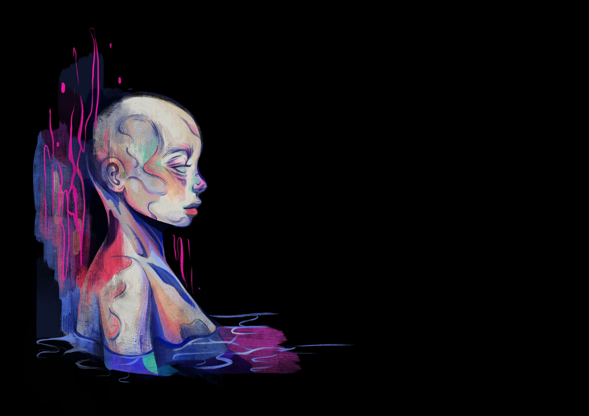
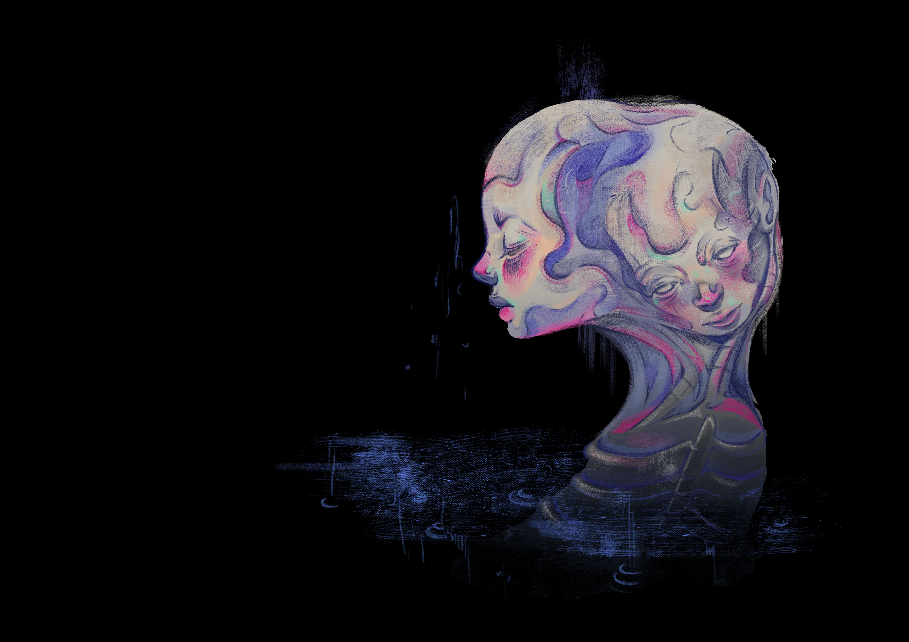
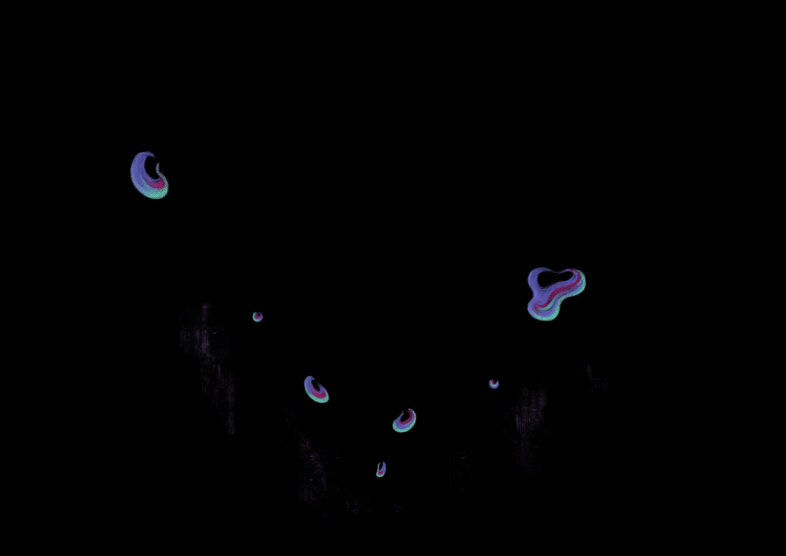
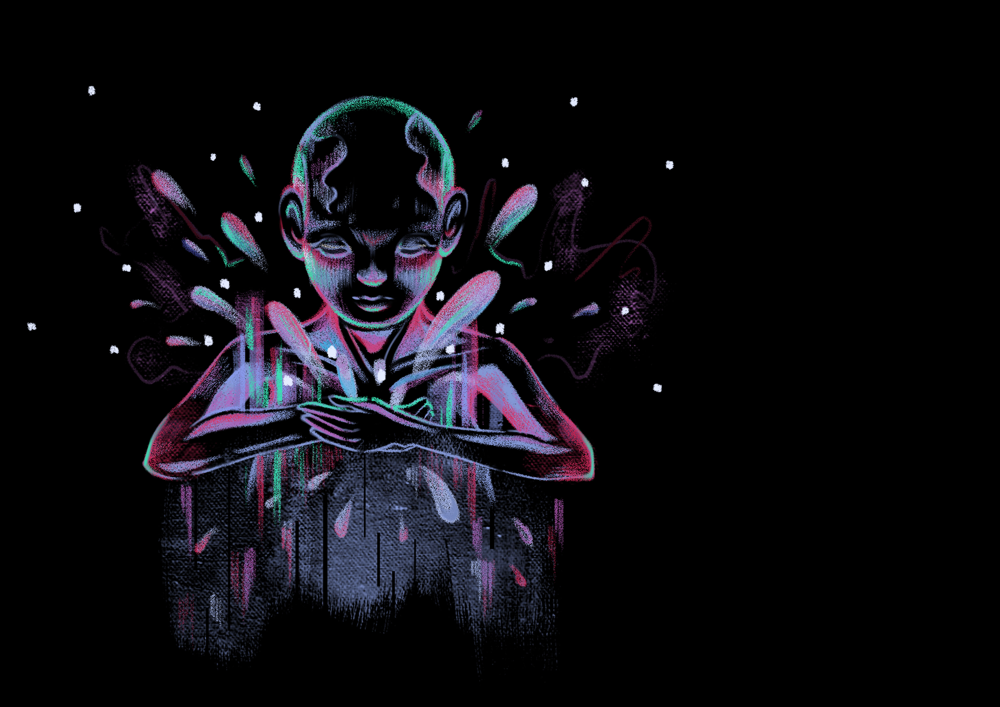

1.1
有人凝望着深海，深海也凝望着他，無盡的黑使他失了神。
Deep depths of sea, how dark, how disconcerting.

1.2
這個人開始變得僵硬，他嘗試閉上眼，
Exchanging gazes engulf the soul and being, however hard the hide and fight,
也嘗試別過臉，但靈魂和肉體卻漸漸被黑暗淹沒。
ocean depths remain to be his plight.

1.3
深海不禁起疑：「你難道看不見自己的疲態麼？」
The sea thus questions “My child, do you not see it is pointless?”

1.4
他回應道：「但你的凝視過於深沉，我只能躲避。」
He replies “Your gaze overwhelms even the dauntless.”
1.5
深海道：「我永遠都只能是深黑的，但你總有照亮自己的方法。」
Deep depths of sea, how dark, how disconcerting.
1.6
他這才發現自己的意志，他直視着靈魂和肉體。
Epiphany struck and he regained his will, the gaze on his flesh.
1.7
身體慢慢散發出微光。
His body slowly emits soothing but determined rays of light.

2.0
面對深海的漆黑，你會選擇別過臉，閉上眼，抑或是直視你的靈魂與肉體？
In face of darkness, what would be your sight?